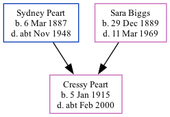

Cressy Peart 1915 - c2000
[ Home ] | [ Calendar ] | [ Surnames Index ] | [ Family History ]The eldest of 3 children of Sydney Peart (a locomotive engine driver) and Sara BiggsCressy Peart was born in Tynemouth, Tyne and Wear, England on Jan 5, 19151,2.
She died c. Feb 2000 in North Tyneside, Northumberland, England2.
Parents
- Sydney Ralph was born on Mar 6, 1887
- Sara Jane was born on Dec 29, 1889
Citations
- England & Wales births 1837-2006 - Findmypast
- England & Wales deaths 1837-2007 - Findmypast
Media
England & Wales births 1837-2006 - BMD/B/1915/1/AZ/001192/031
England & Wales deaths 1837-2007 - BMD/D/2000/3/83883330
Family Tree
Generated by ged2site. Last updated on Nov 13, 2024